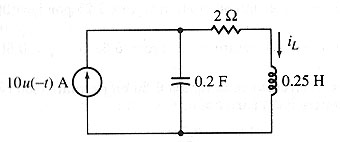

A05 TR analysis: RCL circuit with given initial values
Question. Given the following circuit, find a symbolic expression for current in inductor.

Solution:
Due to the u(-t) in current source, this circuit needs two simulations. The first is for times before t=0, and the second is for times after t=0.
Label nodes and elements. Define variable cir containing circuit description. I used this description:
"j10,0,1,10; r2,1,2,2; cf,1,0,2/10; l25,2,0,1/4"à cir
Notice that I did not defined c as c1 or any other c followed with a number because variables from c1 to c99 are reserved variables. The fifth terms in capacitor cf and inductor are ignored, since neither initial conditions are specified nor they matter in this part.
The first analysis we must perform is a direct current analysis to find out initial conditions for the second analysis. The reason of this can be found in circuits text books. Remember that Symbulator may be the most powerful tool for circuit simulation ever made for a calculator, but it still requires you to learn the basic circuit analysis concepts in order to achieve good results.
sq
\dc(cir)After the dc analysis have finished, ask for the values that will be the initial conditions in second analysis: voltage in capacitor and current through inductor. Type the variables names and write down the results.
v1
il25
Now rewrite circuit description for second part of analysis. Since the current source has an u(-t) then that source basically does not exist after t=0. Therefore, you must eliminate it from description.
"r2,1,2,2,0; cf,1,0,2/10,20; l25,2,0,1/4,10" à cir
The fifth terms in capacitor cf and inductor l25 descriptions now are different from zero, since this elements have gained initial conditions while the current source existed before t=0. Initial conditions are extremely important in this part.
The second analysis we must perform is a transient analysis.
sq
\tr(cir)After the transient analysis have finished, retrieve your answer.
il25
Answer: There you go! This is the right answer... :oD Just scroll the answer to the right.